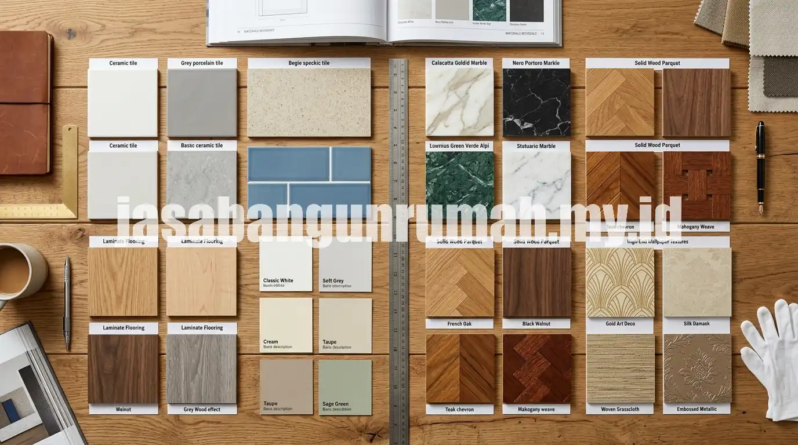

Daftar Isi
Estimasi biaya bangun rumah per meter persegi tahun 2026 secara umum dibedakan menjadi tiga tingkatan spesifikasi, yaitu sederhana, menengah, dan mewah, dengan kisaran harga yang dapat bervariasi tergantung lokasi, material, dan tingkat kesulitan desain.
Faktor yang Memengaruhi Biaya Bangun Rumah per M2
Biaya bangun rumah per meter persegi dipengaruhi oleh beberapa faktor utama, yaitu spesifikasi material yang dipilih, tingkat kesulitan desain, kondisi tanah dan lokasi proyek, serta upah tenaga kerja yang berbeda di setiap daerah.
Rumah dengan desain sederhana berbentuk kotak umumnya membutuhkan biaya lebih rendah dibandingkan rumah dengan banyak lekukan, void, atau elemen dekoratif kompleks, karena tingkat kesulitan pengerjaan yang lebih tinggi membutuhkan waktu dan keahlian tukang yang lebih spesifik. Kondisi tanah yang labil juga dapat menambah biaya pada pekerjaan pondasi, sehingga estimasi awal per meter persegi sebaiknya tetap disesuaikan setelah dilakukan pengecekan kondisi lahan secara langsung.
Kisaran Estimasi Biaya per Spesifikasi Bangunan
| Spesifikasi | Karakteristik Material | Estimasi Biaya per M2 | Cocok Untuk |
|---|---|---|---|
| Sederhana | Dinding bata plester aci, atap genteng beton, lantai keramik standar, kusen aluminium standar | Berkisar Rp 3.000.000 - Rp 4.500.000 per m2, dapat bervariasi tergantung lokasi dan supplier | Rumah subsidi, rumah tapak anggaran terbatas |
| Menengah | Dinding hebel atau bata ekspos sebagian, atap baja ringan dengan genteng metal, lantai granit lokal, kusen aluminium atau UPVC | Berkisar Rp 4.500.000 - Rp 6.500.000 per m2, dapat bervariasi tergantung spesifikasi finishing | Rumah tapak keluarga standar hingga menengah atas |
| Mewah | Material custom seperti batu alam, kaca tempered besar, sistem smart home, lantai marmer atau parket kayu solid | Berkisar Rp 6.500.000 - Rp 10.000.000 per m2 ke atas, dapat bervariasi tergantung tingkat kustomisasi | Rumah mewah dengan desain custom dan material premium |
Angka pada tabel di atas merupakan gambaran umum yang bersifat estimasi awal, bukan harga pasti, sehingga tetap perlu disesuaikan dengan kondisi lapangan dan penawaran dari kontraktor terkait.

Bagaimana Cara Menghitung Estimasi Total dari Harga per M2?
Estimasi total biaya bangun rumah dapat dihitung dengan mengalikan luas bangunan dalam meter persegi dengan harga satuan per m2 sesuai spesifikasi yang dipilih, kemudian ditambahkan biaya pendukung seperti pagar, carport, atau taman jika diperlukan.
Sebagai contoh perhitungan sederhana, rumah dengan luas bangunan 60 meter persegi pada spesifikasi menengah dengan harga acuan tertentu per m2 akan menghasilkan estimasi total sebelum ditambah biaya pendukung lain di luar bangunan utama. Perhitungan ini sebaiknya tetap dilengkapi dengan Rencana Anggaran Biaya yang lebih rinci per item pekerjaan agar hasilnya lebih akurat dibandingkan hanya mengandalkan estimasi harga per m2 secara kasar.
Mengapa Estimasi Antar Kontraktor Bisa Berbeda Jauh?
Perbedaan estimasi antar kontraktor untuk spesifikasi yang terlihat sama sering disebabkan oleh perbedaan merek material yang digunakan, sistem pembayaran upah tukang, serta ada tidaknya biaya manajemen proyek yang disertakan dalam penawaran.
Sebagian kontraktor menawarkan harga per m2 yang sudah termasuk seluruh pekerjaan hingga finishing siap huni, sementara sebagian lain hanya menghitung sampai tahap struktur atau dinding tanpa finishing, sehingga penting bagi calon klien untuk memastikan cakupan pekerjaan secara detail sebelum membandingkan angka penawaran. Untuk mendapatkan simulasi yang lebih sesuai kondisi rumah yang direncanakan, dapat cek biaya biaya bangun rumah per m2 melalui perhitungan yang disesuaikan dengan lokasi dan spesifikasi yang diinginkan, atau langsung ajukan form penawaran untuk mendapatkan estimasi rinci dari tim kami.